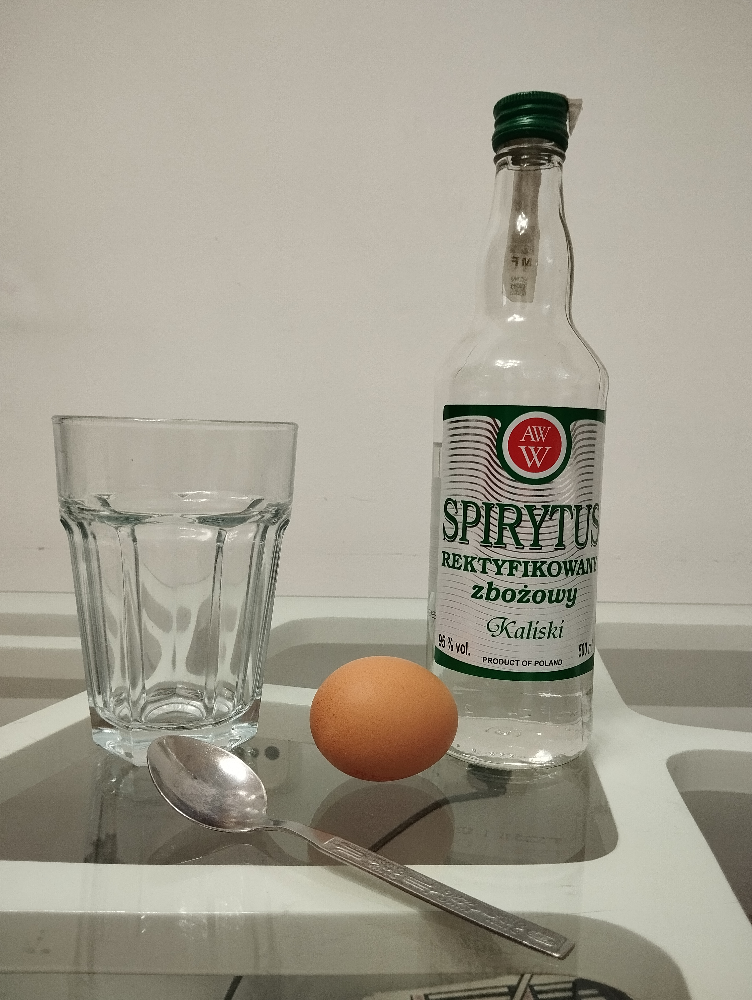

Jak alkohol wplywa na białko jaja kurczego?
Przygotuj: surowe jajko, szklankę, łyżeczkę do herbaty, spirytus.

Przebieg doświadczenia: Rozbij jajko i umieść białko w szklance. Pryjrzyj się białku,
zapamiętaj, jak wygląda. Dolej do szklanki łyzeczkę spirytusu.
Obcerwacje:
- Białko zaczeło się skręcać i tworzyć skrzepy
- Pojawiło się zmętnienie wokół białka
- Białko zmieniło konsystencję i stało się bardziej twarde
Wniosek:
- Spirytus może wpływać na strukturę białka. Dodanie spirytusu do białka spowodowało skurczenie się i
tworzenie
skrzepów.
- Białko jest wrażliwe na działanie alkoholu.